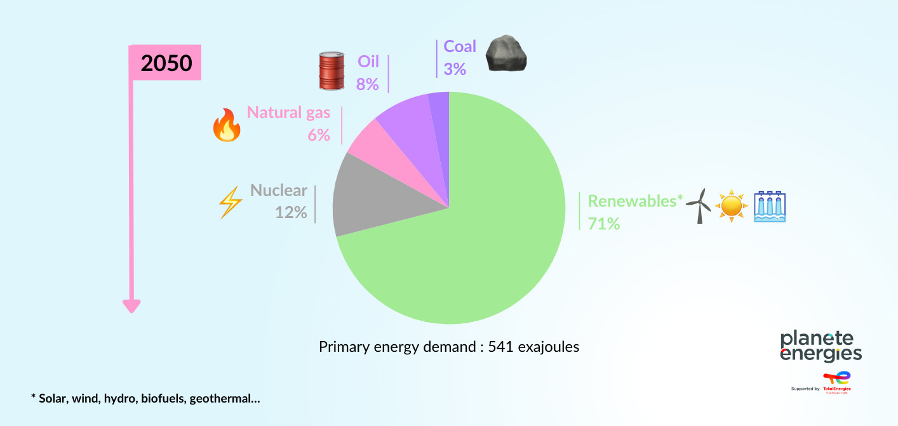
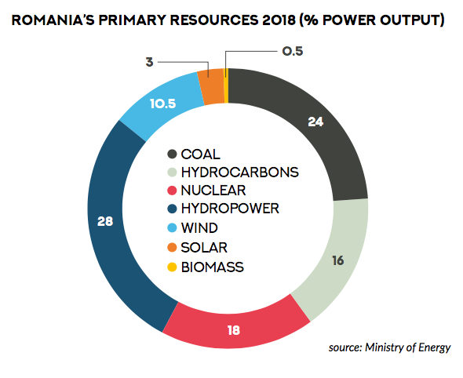
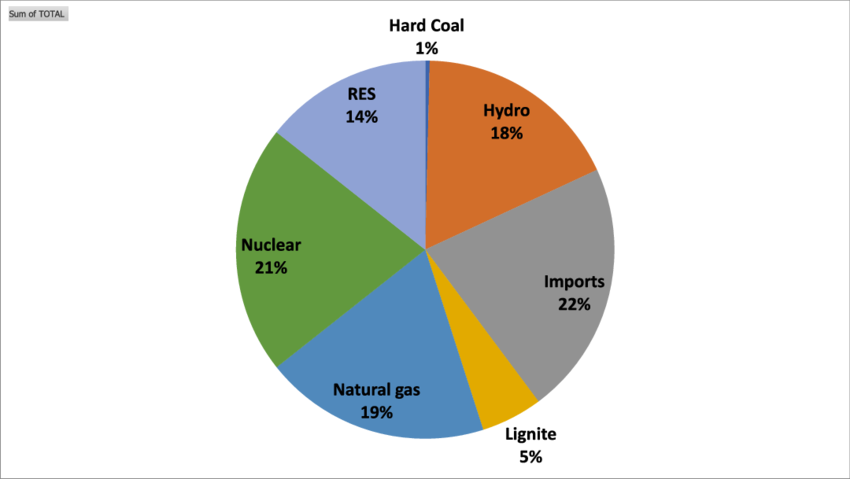

În doar 90 de minute, Soarele trimite pe Pământ suficientă energie cât să acopere consumul nostru pentru un an întreg.
Exemple de surse regenerabile de energie:
O singură turbină eoliană de mari dimensiuni poate produce suficientă energie pentru a alimenta peste 1.500 de gospodării într-un an.
Este cea mai veche și cea mai mare sursă de energie regenerabilă folosită de omenire.
Barajul „Trei Defilee” din China este cea mai mare centrală hidroenergetică din lume și poate genera 22.500 MW, mai mult decât consumul unor țări întregi.
În Islanda, aproape 90% dintre locuințe sunt încălzite direct cu energie geotermală.
Un avantaj unic: spre deosebire de solar și eolian, este disponibilă non-stop, indiferent de vreme.
Viitorul verde:

Până în 2050, se estimează că peste 70% din energia globală va proveni din surse regenerabile, dacă ritmul actual de investiții continuă.
Sursele regenerabile pot preveni emiterea a milioane de tone de CO₂ anual, reducând efectul de seră și schimbările climatice

Cum se plaseaza Romania in domeniul energiei Verzi?
Aproximativ 50% din energia electrică livrată în rețea în 2023 a provenit din surse regenerabile, conform datelor furnizate de Ministerul Energiei. Acest procent reprezintă o creștere de 5% față de 2022 și o creștere impresionantă de 8% comparativ cu 2021.

Conform estimărilor, până în 2030, mixul energetic regenerabil al României va fi compus din: 37% energie eoliană 35% energie hidro 23,5% energie solară